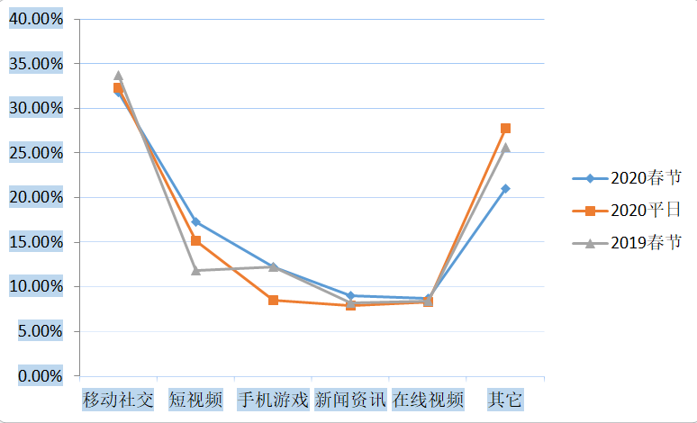
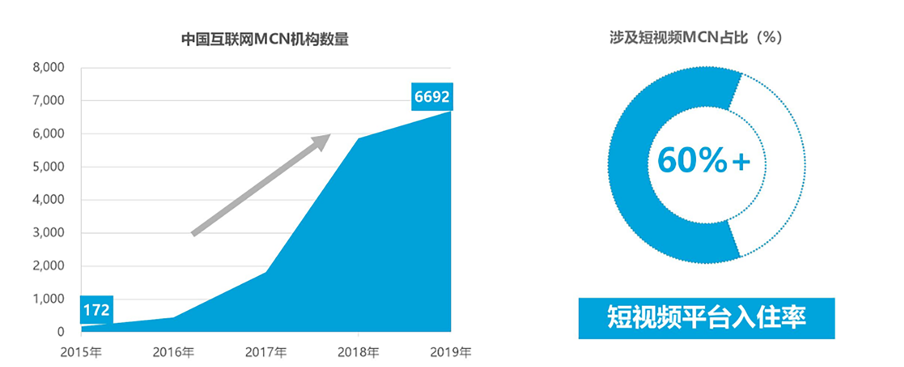
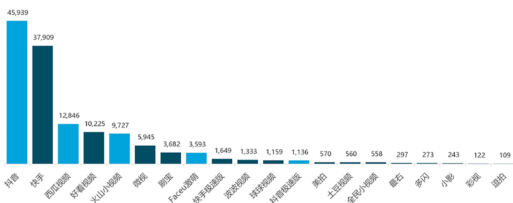
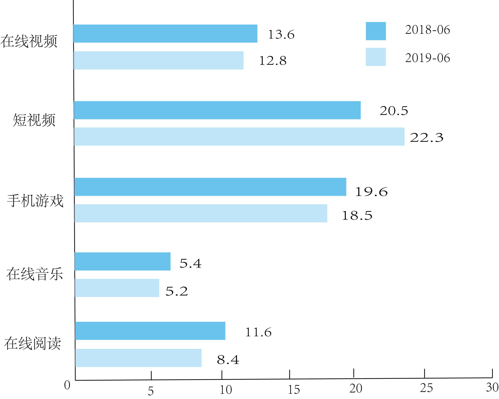
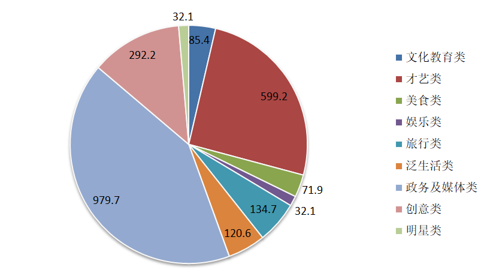
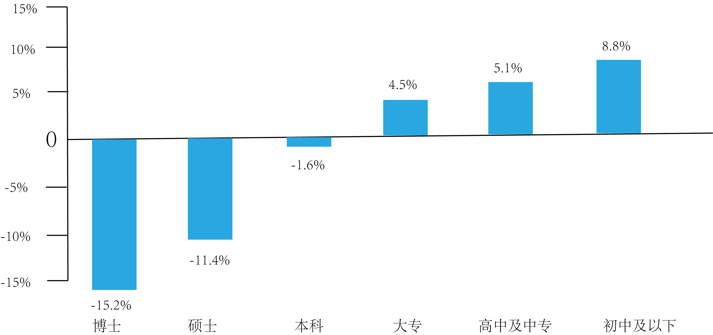
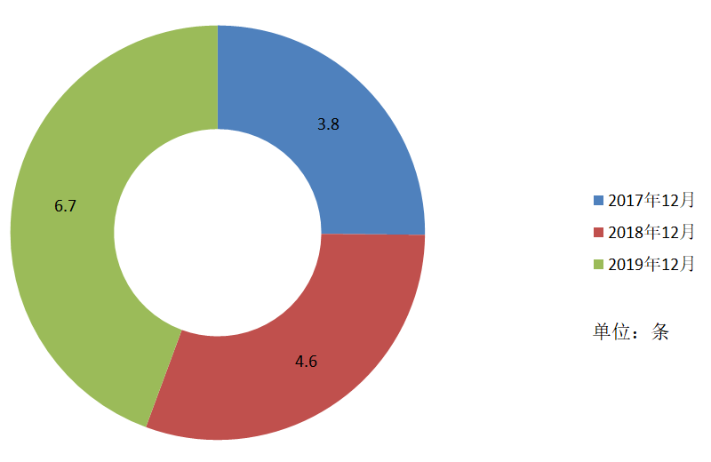
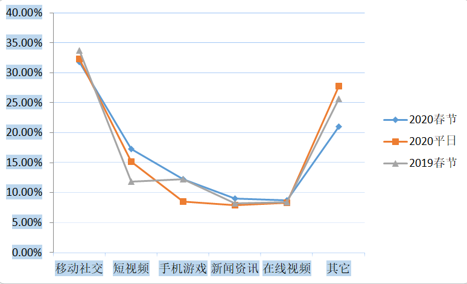
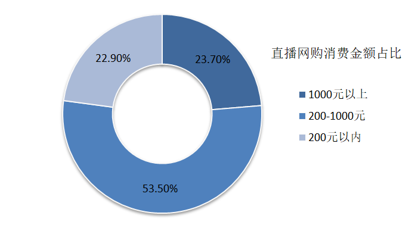
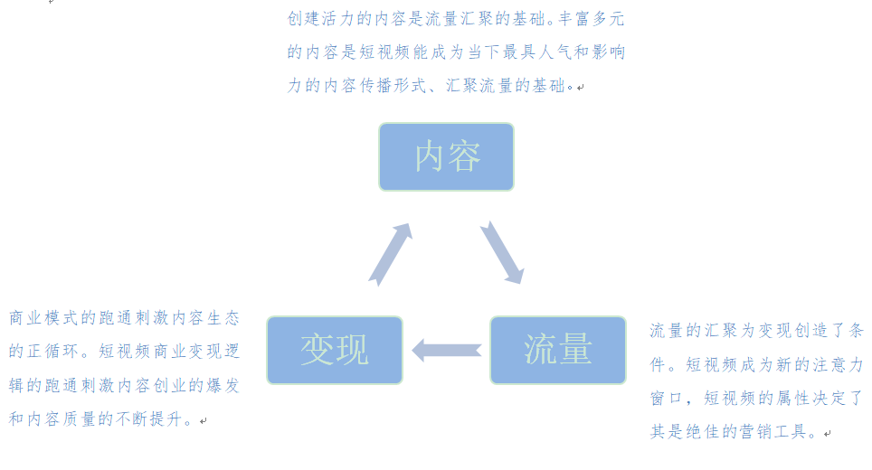

数据对比

短视频匹配“疫情”关键词次数分布

| 类别 | 基本信息 |
|---|---|
| 中文名 | 短视频 |
| 英文名 | Instant Music Video |
| 属性 | 互联网内容传播方式 |
| 传播时长 | 一分钟以内 |
| 类型 | 短纪录片、情景短剧、技能分享、街头采访、创意剪辑等 |
2019年，中国互联网MCN机构近6700家，超六成入住短视频平台 
top20最受欢迎短视频App

泛娱乐典型行业月人均使用时长（小时）

不同视频内容播放量（单位：万次）

2019年不同学历短视频用户规模同比增速

短视频核心用户缺乏耐心，平均每分钟刷短视频近7条


短视频匹配“疫情”关键词次数分布
2018年起直播带货呈爆发增长，未来直播电商将发挥越来越大的影响力和价值

